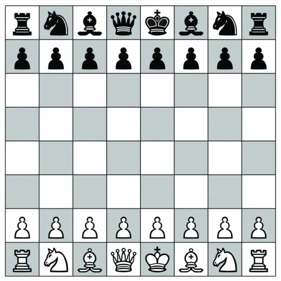
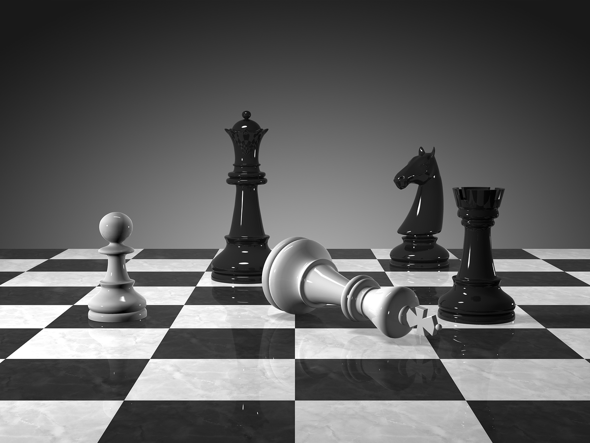
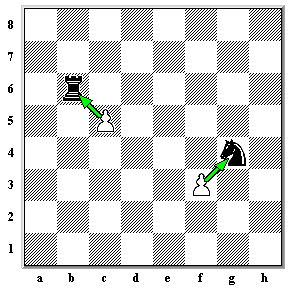
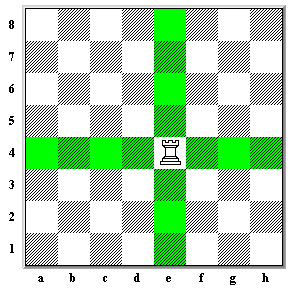
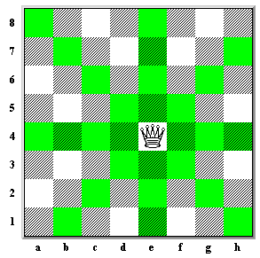
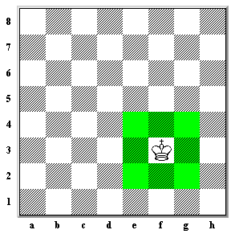
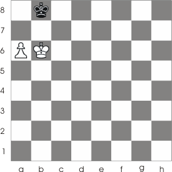

Rules of Chess
The Basics
Chess is a game board game where in which two opposing armies face off in the quest to capture the opponents King
Each side takes it in turns to move one piece, the piece can advanced forward or backward on the board depending on what piece it is. A piece can also take another piece if the opponents piece is within your advancing pieces path
The main goal of the game is defeat the opponents army and capture their king achieving victory on the battlefield
How to win
The main aim of chess is to capture and defeat the enemy king, each person takes one move at a time and once the opponents king is defeated the game ends

Check
Check is your form of attack in chess, move a piece on your side of the board so the next turn it will take the enemy king. Check is any move where in which the opposing king or your king can be attacked and defeated next turn
CheckMate
To capture the enemy king you have to put them in check, by attacking them with one of your pieces. If the opposing player cannot defend their king, either by moving their king, putting a piece in the way of your piece, or taking the piece you have put their king in check with, you have won. This is known as CheckMate and once CheckMate is achieved the game ends.
The Pieces
Pawn

The pawn is most basic piece on the board, it is able to move 2 spaces forward on its first turn, then one space further every subsequent turn. However, the pawn cannot attack pieces in front of it, it instead attacks pieces one space diagonal, either to the left or right. Use pawns to gain control of the board and to stop advancing enemy peices by backing your pawn up with another pawn.
Movement Pattern

Attack Pattern
Knight

The Knight or the Horse the Knight left behind has a very unique movement pattern unlike any other piece on the board. It moves in L shapes, and unlike any piece, because it is a horse, it can jump over friendly and opposing pieces. Knights are invaluable to controlling the board. With their unique movement pattern they are able to cover a large amount of squares on their own. Try putting an opposing player in check with the knight while also threatening a rook or queen, this will give you a massive advantage.
Movement and Attack Pattern

Bishop

The bishop is a stubborn piece and refuses to move off the colour it started on, meaning it can only move and attack pieces diagonally depending on which colour it started on. However, bishops can cross the board very quickly and are able to set up attacks the opponent may not be able to see as it is so far away. Use bishops to cover you other pieces as you attack from the safety of the back of the board, then strike when the time is right.
Movement and Attack Pattern

Rook

In chess castles, known as rooks, can move. Castles can move in straight lines up, down, left, or right of where they currently are and can move in these directions until something blocks their path. rooks can be deadly when combined with the Queen later in the game as they allow for very simple check and check mate positions. So keep in mind to watch out for your rooks through out the game as they could be crucial for victory later on.
Movement and Attack Pattern
Queen

The most powerful and useful piece in the entire game, forwards, backwards, diagonal, side to side, this girl has it all. I mean her royal highness can move anywhere she wants on the board, the only thing she cannot do is jump other pieces like the knight. The Queen is your most valuable attacking piece which you should both protect and attack with throughtout the game. Finding a way to eliminate the opponents Queen will allow you to gain a massive advantage on the board.
Movement and Attack Pattern
King

The King is the most important piece on the board, but also one of the most useless, basically do not use your king for an offensive unless you must. The king is only able to move 1 square in any direction and is not able to move or attack a piece if it would leave him in check. The aim of the game is to attack the opposing king while at the same time protecting your own. Be wary of leaving yourself vulnerable if you go on the offensive.
Movement and Attack Pattern
Special rules
In chess there are certain moves and scenarios that only appear occasionally, but any budding player must be aware of them, and be able to call upon them when the time is right!.
Castling
Once a game you can swap a castle with a king if both pieces are not obstructed. This can be used to both protect the king and also get a rook into battle faster.

Promotion
If a pawn reaches the other side of the board it is in for a reward for its journey. The pawn is promoted into any of other major pieces on the board, most of the time it obvious to promote your pawn to a queen. Who said pawns were useless eh?

Stalemate
Stalemate occurs when the opponent is not in check but cannot make a legal move as they would then be in check. If this scenario occurs the game is drawn, this is the only way in which the game is not won by either side, and something for players to be wary of when attempting to end a game.
MORE FROM CHESS TUTOR

Rules & Tactics
Get to grips with Chess by learning the rules. Learn the basic and advanced tactics, most popular openings, as well as traps and best opening patterns.
Find Out MorePlay Chess
Chess Tutor not only connects you with other players, but allows users to guide your gameplay. Helping you become the Chess master.
Find Out MoreContact Us
Please feel free to contact us either through email or other communication methods - We'd love to hear your feedback!
Find Out More